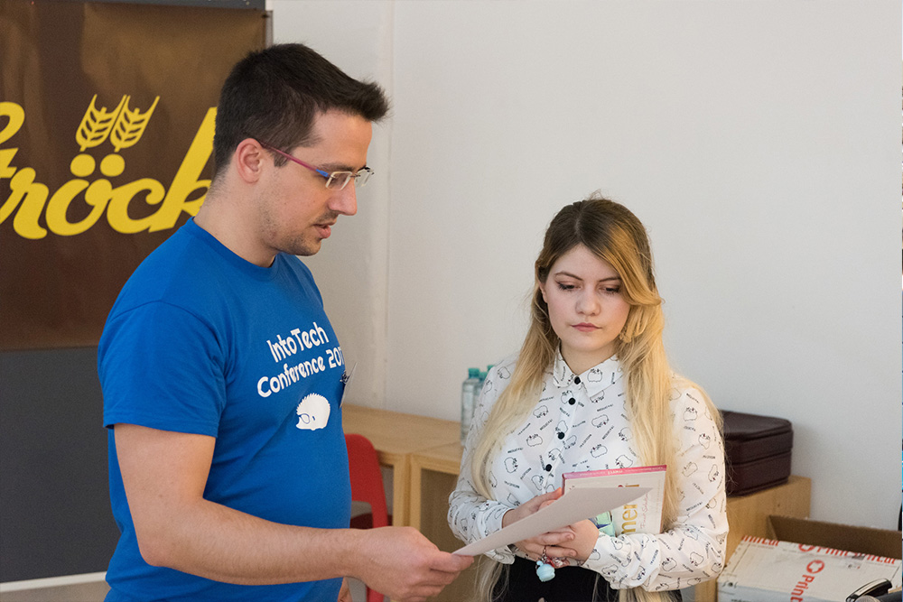
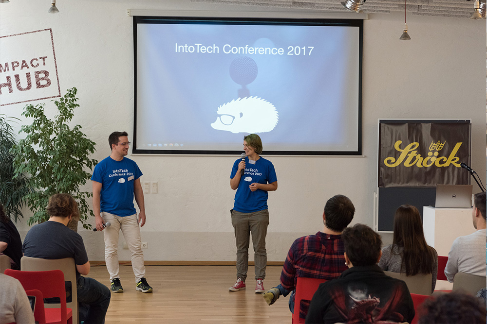
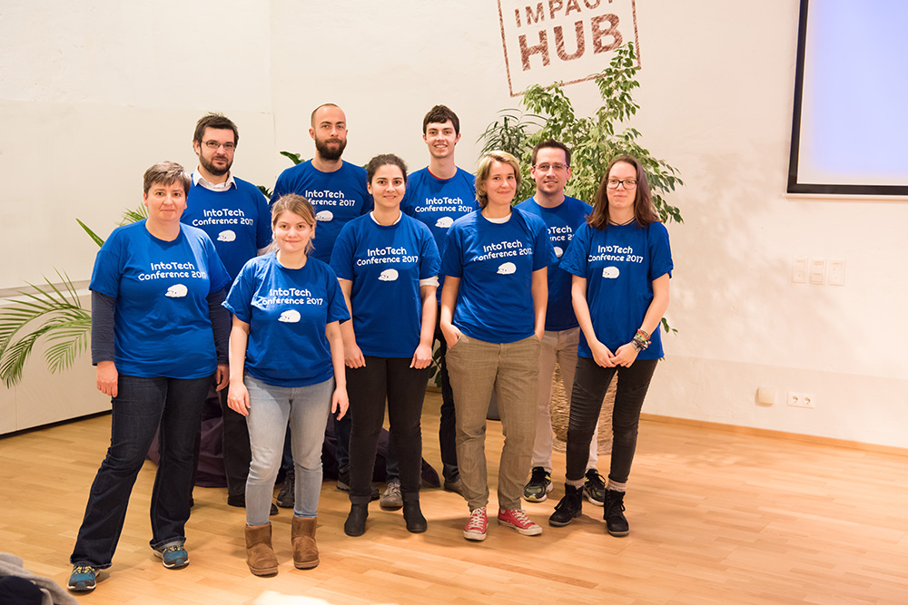

- Janos and I two days before the conference, standing in our living room completely stuffed with boxes from our sponsor partners and Amazon.“I can’t believe we actually did it and managed to organise a whole conference over the last year”
“We haven´t managed to organise a whole conference yet. What we did manage was to order a lot of boxes and make my amazon bill increasingly higher”
The purpose of this blog article is to create a resource for people who are interested in organizing their own volunteer-based conferences, or similar events, through giving an insight into into our event planning.
I am a 21 year old IT student, with a background in Multimedia and Design, and over the past year I have been organizing a tech conference for IT beginners called IntoTech. I did so next to working and studying. For organising IntoTech I relied heavily on the experience I gathered through being part of the organizing team of River Jump! . RiverJump! was a festival-style several day free event, EU-funded and volunteer based, which brought together around a 150 participants from three countries, to participate in Workshops and practice sustainable living. While I was part of the core organizing team, I was far from in the drivers seat or making any major decisions, or carrying much responsibility. This was completely different with IntoTech, where I was the main driving force behind the project and was constantly working on it for almost a year.
The Facts
In December of 2016 I invited a few people to meet up and do a brainstorming session. It was a mixture of friends and acquaintances and around 10 people showed up, most of which were involved in tech in some way. Three of this group, excluding me, would remain active and involved in some way until the end of the project. The goal of this meeting was to gather input and ideas, and further shape the idea I had, as well as getting a team together. Originally I wanted to create an event focused on either how to teach technology (so a didactic viewpoint), or on how technology is used as a tool in activism projects. There was something of an agreement between a few of us, that what was really important when learning tech is to meet a community, and to have a spirit of wanting to continue learning, of wanting to get better. We also thought that the talks at this conference should transfer the enthusiasm that we had for tech unto the audience.
Conclusion : Being open to input on your idea is definitely a good thing to help get people involved and just make it better. The people who show interest in the beginning might not be the ones who stick around, but nevertheless try and get them involved.
Soon after the first meeting, we had a small team together and I started to immediately look into funding. My tip: Start with getting some money for the project as early as you can.
From my previous experiences with the environmental project and my diploma project, I had an overview of which fundings to apply to. All in all we applied and received two fundings: The ÖH funding and the EureProjekte funding .
Depending on the amount of money you are applying for, you are expected to write up a detailed application, which can range from two pages (EureProjekte) to 60 pages (EU Fundings). They force you to really think through your budget and time plans, which is a good thing. These fundings work in a way that after you receive the money, or before, you are expected to be open and communicate your project to the Funder, to manage your finances so that you have a proper accounting to show them after the project is done and to finalize it with reports.
Conclusion: Fundings are a responsibility, not a one time you receive the money and goodbye – kind of thing.
Of course things are still going to change during your project, and there a lot of factors you cannot influence or know anything about at the early stages of the project. However formulating your ideas in a presentable way, making them more concrete, helps a lot with knowing the direction the project will go in.
What was completely new for me in this project was working with sponsors, and our project was not the easiest to “sell” to sponsors. For a tech conference you usually look for tech companies to pitch in with money, however most tech companies are interested in selling themselves to a tech audience, that has some potential future employees among them. Having a crowd of all tech beginners, which might only be hire-able within the next 2 to 10 years, does not fall into that category. With big companies it is especially strict, since their budget is already planned out for the year and if your event does not fit whatever they reserved the money for this year, they will not sponsor you, even if they like your idea. We got extremely lucky with Github sponsoring us. One of Githubs mission is to strengthen the tech community, so IntoTech did fit into this.
We have made the experience that rather than asking sponsors for money, it seems to work reasonably well to ask for something concrete, like electronics or food. Conrad supplied us with a huge box full of Electronics for one of our Workshops, which we passed on to a school to use in their classes.
On a more general note, when handling money it does make sense to make a bank account only for the event money (we used N26 for this, since they are free) to have a clear seperation of concerns.
Conclusion: Funding can be a very good alternative to sponsoring, while it may be easier to receive it is also more effort to manage.
We have made the experience that rather than asking sponsors for money, it seems to be better to ask for something concrete, like electronics or food. Konrad supplied us with a huge box full of Electronics for one of our Workshops, which we are going to pass on to a school for the students to learn with.
On a more general note, when handling money it does make sense to make a bank account only for the event money (we used N26 for this, since they are free) to have a clear seperation of concerns. Moreover, we founded an association, for legal reasons, since otherwise we would have had to pay taxes on any incoming sponsor money.

After we had applied for the first fundings, we needed to find a Location. This definitely was a tough one for us. We wrote out a lot of emails to different spaces in Vienna and we had the hope that someone would host us for free.
After a tip from the organizers of another tech-conference, I contacted the ImpactHub. They made us a fair offer, but it was not free and at this point we had no money. So we kept them waiting, still looked around, waited for replies on emails. At some point we decided we had to stop looking, if we ever wanted to get this done. We just had to say yes, and figure out the How later. Worst case, we were going to pay for it ourselves. This decision helped us catch up on a lot of lost time, and to move ahead.
Conclusion: Sometimes the best thing is to just settle on something, even if it isn't what you originally wanted, just so you can finally move on and don't get stuck at a stage in your project. The ImpactHub turned out to be a great location for a first event, with a great atmosphere and helpful and approachable staff.
Pretty much all the marketing and branding we did was completely home made: I built our website, designed the logo, created all the folders and info material, I handled all our social-media accounts. We had applied for funding to cover different printing expenses, so we would have flyers and posters, however it turned out that online-marketing was way more efficient and reached way more people, than anything in print. By posting in different facebook groups and asking people to share, we fairly easily “sold” out the event. We had a sponsoring deal with Kurier (Link), where they printed an ad for the conference in their newspaper a few times, but this did not turn up many new registrations as far as I could tell.
Conclusion: Online-Advertisement works really well for reaching people, a strong online-presence is important. Printing was not a necessity for us.
Personally this was the hardest one for me, and I think it is definitely one of the biggest challenges in Volunteer work in general. How do you get people, who have jobs or studies and very limited free time, to spend their free time working even more?
There were a few things I knew before and thought I could implement in trying to keep people involved in the project. The first thing I thought was relevant, is to give concrete tasks. Back when we organized the environmental project, our project leader often approached us at the end of a meeting with "Can you do this task until this deadline?" and that worked quite well for us. The second thing I knew was that you have to give people a feeling of involvement and responsibility for the project. In the environmental project we had fairly regular personal meetings, but also did stuff together in our free time. We had quite a strong bond, with the project connecting us. This, again, seemed to work quite well. However, personal meetings are extremely difficult if everyone is busy, and they are quite often not very efficient. They take at least one or two hours, often times longer and it is time that could be invested actually getting work done.
What I have learned during trying to get people involved, is that it does not necessarily help to give them concrete tasks. Often times it takes longer to explain what you want from someone else, than just doing it yourself. And giving one concrete task does not necessarily reduce the load of responsibility on yourself. On the contrary it made it even harder for me at times, because now I was not in control anymore, I had to wait for the other person to finish, I had to check back with them, remind them and ultimately the result might be different to what I wanted.
Conclusion: What I personally take from this, is that if someone wants to help with a project, I need them to take responsibility of one part of the project. This includes making decisions, making plans on what is needed, planning actions and setting things into motion. Only then, the load is actually taken off yourself. Otherwise you still have to keep all the strings connected in your head and have all the information and management done on your site.
The event itself went quite smoothly, all the speakers appeared, all the workshops took place, everything arrived on time and we had a lot of help. We got quite a lot of positive feedback, and personally I really enjoyed the atmosphere which developed over the course of the day.
The biggest disappointment for me were the number of participants. We had a 140 registrations (With the talk room fitting about a 100 people), out of which around 50 showed up. I had been expecting less people to show up than were registered, since it was a completely free event and that’s usually the way it goes. However I was not expecting this low of a number. It was actually quite frustrating to me, because we did have a waiting list of about 25 people, who did not get a ticket, but might have actually shown up. And I did spend every free minute over the course of half a year with organizing this event.
The second reason why this is frustrating for me is, while all the Workshops were completely packed, there weren't that many people at most of the talks. The talks itself were absolutely amazing, and I really wished that more people could hear them, that the knowledge and enthusiasm could reach a bigger crowd. The things spoken about were important, cool and inspiring, and it was just too bad not more people heard them speak.
However, this smaller crowd also had an upsite in my opinion: The people who were actually there, were really, really there. They were asking questions, listening closely, interacting and speaking to each other. The atmosphere to me seemed extremely open, almost everyone seemed to speak to everyone else including the speakers themselves. And some wonderful things happened, I would have probably never noticed in a bigger crowd such as:
I was very tired during the event and whenever I had a free minute I was sitting somewhere in half-coma, but I heard many more stories from my friends (aka The Volunteers), and it really seemed people were engaging and motivating each other. Even when it did not reach as many people as I had hoped it would, I do feel it was quite a success, simply because the ones who were there seemed to be enjoying themselves, which is the thing that matters and makes half a year of hard work worthwhile.
Conclusion: IntoTech was a lot of work. Maybe more work than it was worth for the number of participants that actually showed up. However, I will still see it as a success because the people who were there seemed to enjoy themselves, and be happy, so personally, I think that was enough for me to be okay with more or less constant IntoTech-stress for half a year.